5-амалий иш Мавзу: Триангуляция тармоғи лойиҳасининг аниқлигини баҳолаш
Планли инженер-геодезик тармоқларни триангуляция усулида барпо этишда учбурчаклар занжири,
геодезик тўртбурчаклар, ёрдамчи диогaнaлли марказий тизимлар кенг қўлланилади.
Тармоқнинг тенглаштирилган элементлари функциясининг ўрта квадратик хатолиги ту
қуйидаги ифода ёрдамида ҳисобланиши мумкин:
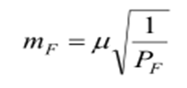
бу ерда и-вазн бирлигининг ўрта квадратик хатолиги;
Бошланғич маълумотлар хатолиги
та mbни ҳисобга олсак, хатолар йиғиндиси
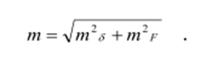
бу ерда и-вазн бирлигининг ўрта квадратик хатолиги;
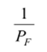
- функция вазнига тескари қиймат.
Бошланғич маълумотлар хатолиги тя ни ҳисобга олсак, хатолар йиғиндиси
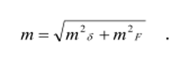
Занжирнинг 2 та базис томонларига таянган боғловчи томоннинг ўрта
квадратик хатолиги (27.1-расм) қуйидаги тартибда аниқланиши мумкин.
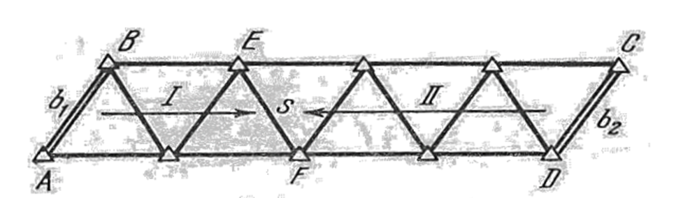
Агарда 1-қатордаги EF=Ѕ томон ўрта квадратик хатосини mѕ1, билан, 2-қатор
хатосини эса ms2
билан белгиласак, у ҳолда S томонлар вазнлари мос равишда қуйидагига тенг бўлади:
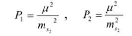
Аниқланаётган S томон ўрта квадратик хатолиги (P1+ Р2) ни ҳисобга олиб
қуйидагича ҳисобланади:
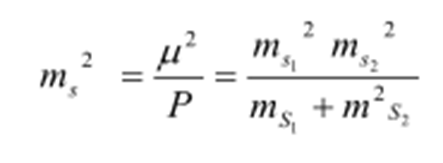
ms1 ва ms2ўрта квадратик хатоликларини томонлар хатоликлари
логарифмлари орқали аниқлаш қабул қилинган
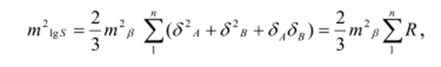
бу ерда - А ва В боғловчи бурчаклар 1' га ўзгарганда ушбу бурчаклар логарифмларининг
ўзгариш қиймати;
mb то-бурчак ўлчаш ўрта квадратик хатолиги;
R-қийматлари махсус жадвалда келтирилади.
Томонлар нисбий хатолиги ва томонлар логарифмик хатолиги 6белгиси бирлиги орасидаги
боғланиш қуйидаги тенглик асосида ўрнатилади
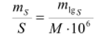
бу ерда М-ўнли логарифм модули.
Бу ердан
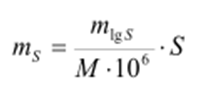
Шу тарзда дирекцион бурчаклар учун қуйидаги ифодани келтирамиз:
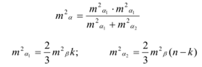
Бошланғич ва охирги томонлар дирекцион бурчаклари хатоликларини
mаб ва mаоҳ ҳисобга олсак,
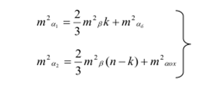
Ѕ томон охирги пунктининг кўндаланг силжиши хатолиги қуйидаги ифода ёрдамида ҳисобланади:
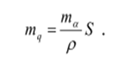
Е ва F пунктлар ўзаро жойлашиш ҳолати хатолиги қуйидагича
аниқланади
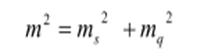
ёки
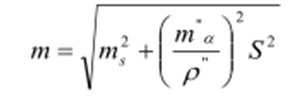
Бу қийматлар махсус жадвал ёрдамида аниқланади.
Агарда вазн бирлиги иқийматини, триангуляция бурчагини ўлчаш ўрта квадратик хатолигига
тенг
деб қабул қилсак, бурчак вазни бирга тенг бўлади
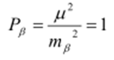
Тескари вазн қийматини ҳисоблаш орқали бурчак ўлчаш ўрта квадратик хатолигини аниқлаш
мумкин:
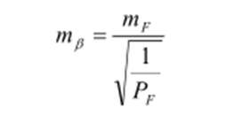
Шундай қилиб, тармоқнинг муҳимроқ бўлган элементларининг ўрта квадратик хатолигини олдиндан
белгилаш орқали триангуляция бурчак
ўлчаш аниқлигини ҳисоблаш мумкин.